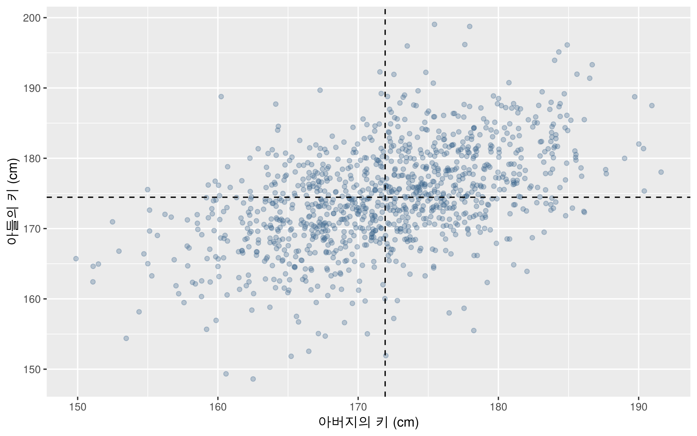
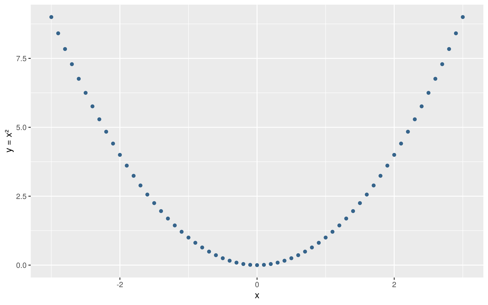
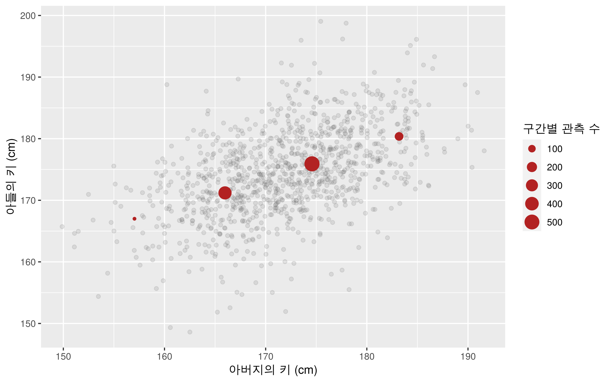

앞 장에서는 산점도를 이용하여 두 변수 사이의 관계를 시각적으로 살펴보았습니다. 이 장에서는 그 관계를 수치로 요약하고, 설명변수의 값으로부터 반응변수의 평균과 새로운 관측값을 예측하는 선형회귀분석을 다룹니다. 설명변수가 하나인 단순선형회귀모형을 중심으로 분석 절차를 익힙니다.
아버지와 아들의 키 자료를 이용하여 상관계수, 최소제곱법, 회귀계수와 결정계수의 의미를 설명합니다. 이어서 R의 lm()으로 모형을 적합하고, 잔차를 점검한 뒤 predict()로 예측값과 구간을 계산합니다. 마지막에는 같은 절차를 스포츠 측정 자료에 적용합니다.
3.1 변수 간 관계와 분석 자료
3.1.1 설명변수와 반응변수
회귀분석에서는 분석 목적에 따라 변수의 역할을 구분합니다. 반응변수(response variable)는 설명하거나 예측하려는 변수이며, 설명변수(explanatory variable)는 그 예측에 이용하는 변수입니다. 일반적으로 설명변수를 \(x\), 반응변수를 \(y\)로 표시합니다.
분석 목적
설명변수 \(x\)
반응변수 \(y\)
아버지의 키로 아들의 키 예측
아버지의 키
아들의 키
악력으로 점프 높이 예측
악력
점프 높이
주간 훈련시간으로 경기기록 예측
주간 훈련시간
경기기록
변수의 역할은 자료의 열 순서가 아니라 분석 목적에 따라 정합니다. 예를 들어 악력과 점프 높이를 함께 측정했다고 해서 악력이 점프 높이의 원인이라고 결론 내릴 수는 없습니다. 체격, 성별, 연령, 훈련 수준 등 다른 요인도 관계에 관여할 수 있습니다.
3.1.2 실습 자료 불러오기
실습에는 첨부 교재에서 사용한 아버지·아들 키 자료를 사용합니다. 한 행은 한 쌍의 키를 나타내며, fheight는 아버지의 키, sheight는 아들의 키입니다. CSV 원본의 단위는 inch입니다.
인터넷에 공개된 CSV의 URL을 read.csv()에 전달하여 자료를 바로 불러옵니다. 인터넷에 연결된 상태에서 다음 코드를 실행합니다. CSV를 미리 내려받거나 자료를 읽기 위한 작업 폴더를 지정할 필요는 없습니다.
library(ggplot2)url1 <-"https://uos-bigdata.github.io/bigdata-exercise/_downloads/4480b104e6e159a32c7d5a0b03cf4684/father-and-son.csv"father_son <-read.csv(url1)dim(father_son) # 행 수와 열 수
[1] 1078 2
str(father_son) # 변수 이름과 자료형
'data.frame': 1078 obs. of 2 variables:
$ fheight: num 65 63.3 65 65.8 61.1 ...
$ sheight: num 59.8 63.2 63.3 62.8 64.3 ...
자료는 1,078행, 2열로 구성되어 있으며 두 변수에 결측값이 없습니다. 파일을 읽은 직후 자료형, 결측값, 단위를 먼저 확인해야 분석에 사용한 관측값을 명확히 할 수 있습니다. 다른 자료에 결측값이 있으면 삭제 여부와 그 이유를 검토하고, 분석에 사용한 표본 수를 함께 기록합니다.
이후의 분석에서는 익숙한 단위인 cm를 사용합니다. 다음 변환은 파일을 읽은 다음 한 번 실행합니다. 변환 코드만 반복하면 이미 변환한 값에 다시 2.54가 곱해지므로, 재실행할 때에는 위의 자료 읽기 코드부터 실행합니다.
fheight sheight
Min. :149.9 Min. :148.6
1st Qu.:167.1 1st Qu.:170.0
Median :172.1 Median :174.3
Mean :171.9 Mean :174.5
3rd Qu.:176.8 3rd Qu.:179.0
Max. :191.6 Max. :199.0
$는 데이터프레임에서 특정 열을 선택하는 기호입니다. father_son$fheight는 father_son의 아버지 키 열을 의미합니다.
3.1.3 산점도와 상관계수
먼저 산점도를 그려 관계의 방향, 직선에 가까운 정도, 값이 크게 벗어난 관측값을 확인합니다. 점이 겹치는 부분은 alpha로 투명도를 조정합니다. 점선은 각 변수의 평균입니다.
ggplot(father_son, aes(x = fheight, y = sheight)) +geom_point(alpha =0.3, color ="steelblue4") +geom_vline(xintercept =mean(father_son$fheight), linetype ="dashed") +geom_hline(yintercept =mean(father_son$sheight), linetype ="dashed") +labs(x ="아버지의 키 (cm)", y ="아들의 키 (cm)")

그림 3.1: 아버지와 아들의 키. 점선은 두 변수 각각의 평균입니다.
아버지의 키가 큰 쪽에서 아들의 키도 큰 경향이 나타납니다. 그러나 같은 아버지 키에 대해서도 아들의 키는 넓게 분포합니다. 관계가 있다는 것은 개별 관측값을 오차 없이 예측할 수 있다는 뜻은 아닙니다.
피어슨 상관계수(Pearson correlation coefficient)는 두 수치형 변수 사이의 선형 관계의 방향과 강도를 나타냅니다. 값은 \(-1\)과 \(1\) 사이에 있으며, 부호는 관계의 방향을, 절댓값은 직선에 가까운 정도를 나타냅니다.
\[
r = \frac{\sum_{i=1}^{n}(x_i-\bar{x})(y_i-\bar{y})}
{\sqrt{\sum_{i=1}^{n}(x_i-\bar{x})^2\sum_{i=1}^{n}(y_i-\bar{y})^2}}
\]
ggplot(curve_data, aes(x = x, y = y)) +geom_point(color ="steelblue4") +labs(x ="x", y ="y = x²")

그림 3.2: 상관계수가 0에 가까워도 곡선 형태의 관계가 존재할 수 있습니다.
또한 상관관계만으로 인과관계를 판단하지 않습니다. 예를 들어 기온은 아이스크림과 에어컨 판매량 모두에 영향을 줄 수 있습니다. 이런 제3의 변수는 인과관계를 해석할 때 교란변수(confounding variable)가 될 수 있습니다. 회귀계수를 계산해도 자료의 수집 방식과 다른 요인을 검토해야 한다는 점은 같습니다.
ggplot(father_son, aes(x = fheight, y = sheight)) +geom_point(alpha =0.15, color ="grey40") +geom_point(data = band_means, aes(size = n), color ="firebrick") +labs(x ="아버지의 키 (cm)", y ="아들의 키 (cm)", size ="구간별 관측 수")

그림 3.3: 전체 관측값과 아버지 키 구간별 평균. 붉은 점의 크기는 구간별 관측 수를 나타냅니다.
붉은 점은 키 구간별 평균이며, 특정한 한 아들의 키를 나타내지 않습니다. 구간별 평균은 구간의 경계와 관측 수에 따라 달라집니다. 이후 회귀식은 이 네 개의 평균점이 아니라 전체 1,078개 관측값을 사용하여 적합합니다.
3.2.2 잔차와 최소제곱법
자료로부터 추정한 회귀식을 \(\hat{y}_i=\hat{\beta}_0+\hat{\beta}_1x_i\)로 나타냅니다. 기호 위의 모자는 자료를 이용하여 구한 추정값임을 뜻합니다. 관측값 \(y_i\)와 적합값 \(\hat{y}_i\)의 차이를 잔차(residual)라고 합니다.
\[
e_i=y_i-\hat{y}_i
\]
오차항 \(\varepsilon_i\)는 알 수 없는 모평균으로부터의 차이이고, 잔차 \(e_i\)는 자료에서 추정한 회귀직선으로부터의 차이입니다. 잔차가 양수이면 관측값이 직선 위쪽에, 음수이면 아래쪽에 있습니다.
최소제곱법(ordinary least squares)은 잔차제곱합이 가장 작아지는 절편과 기울기를 찾는 방법입니다. 여기서 거리는 각 관측점에서 직선까지의 수직 방향, 즉 반응변수 방향의 차이입니다.
첫 번째 식에서 \(b_0=\bar{y}-b_1\bar{x}\)를 얻습니다. 이를 두 번째 식에 대입하고 정리하면 \(b_1=\sum_i(x_i-\bar{x})(y_i-\bar{y})/\sum_i(x_i-\bar{x})^2\)가 됩니다. 설명변수에 변동이 있으면 이 해는 유일한 최소값을 줍니다.
3.3 R을 이용한 모형 적합과 결과 해석
3.3.1 lm()으로 회귀식 적합하기
R에서는 기본 제공 함수인 lm()으로 선형회귀모형을 적합합니다. lm()을 사용하기 위해 별도 패키지를 설치할 필요는 없습니다.
fit_height <-lm(sheight ~ fheight, data = father_son)coef(fit_height)
(Intercept) fheight
86.071975 0.514093
sheight ~ fheight에서 ~의 왼쪽은 반응변수, 오른쪽은 설명변수입니다. data = father_son은 변수들이 들어 있는 데이터프레임을 지정합니다. 절편은 기본으로 포함되며, fit_height에 적합한 모형이 저장됩니다. coef()는 추정한 회귀계수를 꺼내는 함수입니다.
이 자료에서 아버지의 키가 1 cm 큰 경우, 모형이 추정한 아들의 평균 키는 약 0.514 cm 큽니다. 특정 아들의 키가 반드시 0.514 cm 커진다는 의미는 아닙니다. 절편 86.072는 식에서 \(x=0\)일 때의 값이지만, 아버지 키 0 cm는 관측 범위와 해석 가능한 대상에서 벗어나므로 실질적인 의미를 부여하지 않습니다.
계산에는 반올림한 회귀식 대신 coef() 또는 predict()의 값을 사용합니다. 기울기의 반올림 오차도 큰 \(x\)에 곱해지면 예측값의 차이로 나타날 수 있습니다.
3.3.2 summary() 출력 읽기
summary(fit_height)
Call:
lm(formula = sheight ~ fheight, data = father_son)
Residuals:
Min 1Q Median 3Q Max
-22.5480 -3.8466 -0.0201 4.1364 22.7799
Coefficients:
Estimate Std. Error t value Pr(>|t|)
(Intercept) 86.07198 4.65418 18.49 <2e-16 ***
fheight 0.51409 0.02705 19.01 <2e-16 ***
---
Signif. codes: 0 '***' 0.001 '**' 0.01 '*' 0.05 '.' 0.1 ' ' 1
Residual standard error: 6.189 on 1076 degrees of freedom
Multiple R-squared: 0.2513, Adjusted R-squared: 0.2506
F-statistic: 361.2 on 1 and 1076 DF, p-value: < 2.2e-16
처음에는 출력 전체를 외우기보다 다음 항목을 순서대로 확인합니다.
항목
확인할 내용
Call
어떤 반응변수와 설명변수로 모형을 적합했는지
Residuals
잔차의 최솟값, 분위수, 최댓값
Estimate
회귀계수의 추정값과 부호
Std. Error
회귀계수 추정값의 표준오차
t value
추정값을 표준오차로 나눈 검정통계량
Pr(>|t|)
해당 계수가 0이라는 귀무가설에 대한 양측 검정의 p값
Residual standard error
잔차로 추정한 오차의 표준편차. 이 예제에서는 cm 단위
Multiple R-squared
관측된 반응변수의 변동을 모형이 설명하는 비율
Adjusted R-squared
설명변수 수와 표본 수를 반영하여 조정한 결정계수
fheight 행의 p값은 모형의 가정 아래에서 기울기가 0이라는 가설을 검정합니다. p값이 작다는 것은 해당 가설에 반하는 통계적 근거가 있다는 뜻이며, 관계가 크거나 인과관계가 있다는 뜻은 아닙니다. 표본 수가 크면 비교적 작은 관계도 통계적으로 유의할 수 있으므로 기울기의 크기, 구간, 결정계수를 함께 해석합니다. 출력 마지막의 F 검정은 절편만 있는 모형과의 비교이며, 설명변수가 하나인 이 경우 기울기의 t 검정과 같은 p값을 줍니다.
이 자료에서 RMSE는 약 6.18 cm, 결정계수는 약 0.251입니다. 아들 키의 표본 내 변동 중 약 25.1%가 아버지 키를 이용한 회귀식으로 설명됩니다. 이를 예측 정확도가 25.1%라거나, 유전의 영향을 그 비율만큼 측정했다고 해석하지 않습니다.
절편을 포함한 일반적인 최소제곱 회귀에서 적합 자료의 \(R^2\)는 0과 1 사이입니다. 또한 절편을 포함하는 단순선형회귀에서 동일한 관측값으로 계산하면 \(R^2=r^2\)입니다. 절편을 제외하거나 새로운 평가 자료에서 계산한 결정계수에는 이 성질이 그대로 적용되지 않습니다.
MSE는 반응변수 단위의 제곱이고 RMSE는 반응변수와 같은 단위입니다. 모형을 비교할 때에는 같은 반응변수와 같은 평가 자료를 사용하는 것이 기본입니다. 서로 다른 모집단에서 얻은 \(R^2\)의 크기만으로 어느 모형이 더 유용한지 판단하지 않습니다.
계산상의 구분: MSE, 표본분산, 잔차표준오차
R의 var(y)는 분모가 \(n-1\)인 표본분산입니다. 따라서 위에서 정의한 MSE를 그대로 var(y)로 나눈 1 - MSE / var(y)는 정확한 결정계수가 아닙니다. SSE / SST를 사용하면 분모의 차이로 인한 혼동을 피할 수 있습니다.
또한 summary(lm())의 잔차표준오차는 이 모형에서 두 계수를 추정한 것을 반영하여 \(\sqrt{\mathrm{SSE}/(n-2)}\)로 계산합니다. RMSE의 분모 \(n\)과 구분합니다. 회귀분석의 분산분석표에서는 \(\mathrm{SSE}/(n-2)\)도 잔차평균제곱 또는 MSE라고 부르므로 문맥과 분모를 확인해야 합니다.
set.seed()는 같은 무작위 분할을 재현하기 위한 설정입니다. 한 번의 분할 결과는 우연에 따라 달라질 수 있으며, 평가 RMSE가 항상 학습 RMSE보다 크지는 않습니다. 실제 자료에 같은 사람의 반복 측정이나 가족·팀별 군집이 있으면 그 단위가 양쪽에 섞이지 않도록 나눠야 합니다. 시간 순서가 중요한 예측에서는 과거로 학습하고 이후 시점으로 평가합니다. 여기서는 무작위 분할의 계산 절차를 익히는 데 목적을 둡니다.
3.5 예측값과 예측구간
3.5.1 새로운 설명변수 값으로 예측하기
전체 자료로 적합한 fit_height를 이용하여 아버지의 키가 185 cm일 때 아들의 키를 예측합니다. newdata에는 모형의 설명변수와 이름이 같은 열을 가진 데이터프레임을 전달합니다.
그림 3.7: 평균반응의 95% 신뢰구간과 새로운 개인의 95% 예측구간. 각 x값에서 계산한 구간입니다.
앞 장의 geom_smooth(method = "lm")에서 기본으로 표시하는 음영은 평균반응에 대한 신뢰구간입니다. 개인의 예측구간으로 해석해서는 안 됩니다.
3.5.3 외삽과 적용 범위
예측 전에 설명변수가 관측된 범위를 확인합니다.
range(father_son$fheight)
[1] 149.8803 191.6022
관측 범위를 벗어난 설명변수에 대해 예측하는 것을 외삽(extrapolation)이라고 합니다. predict()는 그런 값에도 수치를 반환할 수 있지만, 관측 범위 밖에서도 같은 직선 관계가 유지된다는 근거는 별도로 필요합니다. 프로그램이 값을 계산했다는 사실만으로 예측의 타당성이 확보되지는 않습니다.
또한 이 자료로 얻은 회귀식을 다른 시대, 지역, 연령 또는 측정 조건의 집단에 그대로 적용할 수 있는지는 별도의 문제입니다. 회귀식과 함께 분석 대상, 변수의 단위, 관측 범위, 예측의 불확실성을 기록합니다.
3.6 스포츠 자료 적용과 연습문제
3.6.1 악력과 점프 높이의 관계
1장의 가상 스포츠 자료를 이용하여 분석 절차를 반복합니다. 이 장만 실행해도 실습할 수 있도록 필요한 변수를 다시 생성합니다. 다음 20명의 값은 교육용으로 만든 자료이므로 실제 선수의 예측식이나 평가 기준으로 사용하지 않습니다.
fit_sports <-lm(jump_cm ~ grip_kg, data = sports_reg)summary(fit_sports)
Call:
lm(formula = jump_cm ~ grip_kg, data = sports_reg)
Residuals:
Min 1Q Median 3Q Max
-3.2418 -0.6139 -0.1060 0.7955 2.1215
Coefficients:
Estimate Std. Error t value Pr(>|t|)
(Intercept) 8.81917 1.46365 6.025 1.07e-05 ***
grip_kg 0.69694 0.04015 17.360 1.09e-12 ***
---
Signif. codes: 0 '***' 0.001 '**' 0.01 '*' 0.05 '.' 0.1 ' ' 1
Residual standard error: 1.327 on 18 degrees of freedom
Multiple R-squared: 0.9436, Adjusted R-squared: 0.9405
F-statistic: 301.4 on 1 and 18 DF, p-value: 1.093e-12
악력이 1 kg 큰 경우 추정한 점프 높이의 평균은 약 0.7 cm 큽니다. 이 결과를 악력 훈련의 효과로 해석할 수는 없습니다. 특히 범위 끝에 있는 악력 58 kg 관측값은 회귀식에 미치는 영향이 클 수 있으므로 그 값을 확인하고, 실제 자료라면 수집 기록과 분석 목적을 함께 검토합니다.